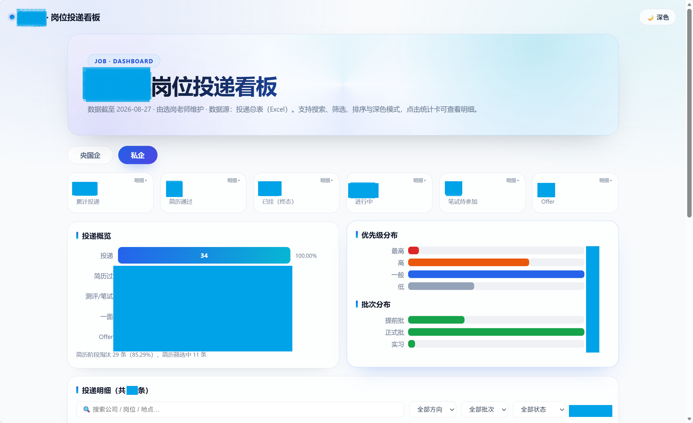
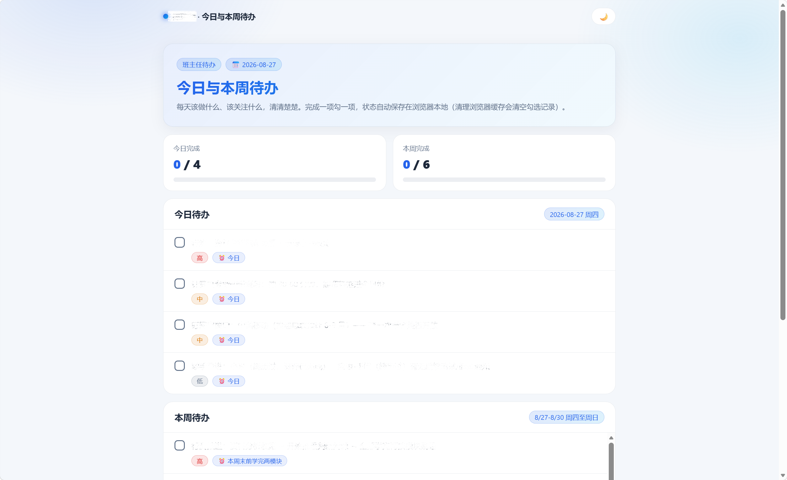
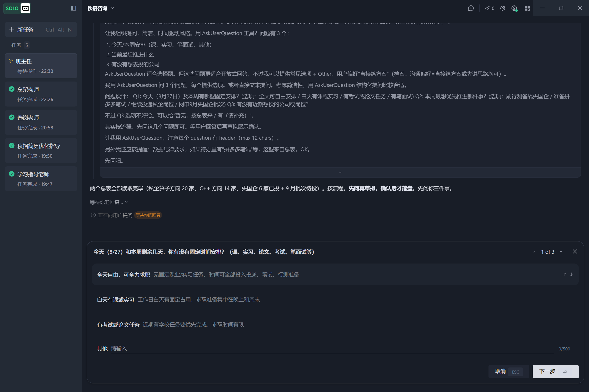

别人花几千块报的「求职陪跑班」
我做成了一套 Agent，并且开源免费
一套专为 秋招 / 春招应届毕业生 设计的 多角色 AI 求职团队。你在 AI 客户端里开 5 个对话，就能拥有一整个求职陪跑团队——不需要你手动整理表格，不需要你记各种截止时间，整个求职战役交给团队管理。
使用效果



极速版（纯小白 / 懒人通道，10 分钟搞定）
如果你连"拉取项目"都嫌麻烦，或者完全不懂技术，走这条通道：
在你电脑上合适的位置创建（比如 秋招AI），记下位置，之后不建议移动。
用"打开文件夹"打开刚创建的文件夹。
直接新建对话，发送以下内容：
对话框标题栏即可改名（它会提醒你；没提醒就自己改）。
安装组件、放置简历、创建其他老师——总架构师都会一步步带你完成。
一句话总结：把链接丢给对话，剩下交给它。
快速开始（一步一步 · 完整版）
以下步骤照着做即可。遇到任何问题，直接问总架构师对话，它会指导你完成。
第 0 步 · 准备材料
| 材料 | 说明 |
|---|---|
| AI 客户端 | 推荐 TraeWork（功能更强、免费额度更多、腾讯文档 MCP 一键添加）。Trae 也完全可用。Cursor 等其他支持 MCP 的客户端也可以。 |
| 大模型 | 先用客户端自带免费额度；不够再配 DeepSeek/Qwen 等（见模型推荐，具体配置问总架构师）。 |
| 个人材料 | 简历（PDF/Word）、成绩单（可选）、求职目标。 |
第 1 步 · 拉取本项目
然后把文件夹放到你电脑上的任意位置（建议放在固定目录，后续不要再移动）。
第 2 步 · 放置个人材料
| 材料 | 放置位置 |
|---|---|
| 简历 | 00_交互区/用户提供/ |
| 成绩单（可选） | 00_交互区/用户提供/ |
| 校招信息汇总表（如有） | 00_交互区/用户提供/情报源/ |
详见 00_交互区/用户提供/README.md 的放置指引。
第 3 步 · 复制总架构师提示词（第一步永远是它！）
打开 各老师对话初始提示词.md → 复制 总架构师 那一份 → 在 AI 客户端新建对话粘贴发送 → 告诉它"我是新用户，请带我完成系统初始化"。
⚠️ 总架构师会引导你完成后面所有配置：安装必需组件、检查环境、初始化系统。之后所有配置问题都问它，不要自己乱装。
第 4 步 · 按顺序创建其余四位老师
等总架构师宣布"系统就绪"后，依次新建 4 个对话，分别粘贴 班主任 / 选岗老师 / 学习指导老师 / 简历优化老师 的提示词。每个对话会自动命名成对应角色名（如"班主任"）；各老师会先阅读自己的 README 并复述职责边界，然后开工。
第 5 步 · 开始求职战役
班主任先了解你的情况（学校/专业/意向城市/目标等）建立用户档案；选岗老师开始搜集岗位情报、建立投递台账；学习指导老师按目标单位出训练计划；简历优化老师根据新方向帮你优化简历。
模型推荐（先免费，后自备 API）
| 模型 | 说明 |
|---|---|
| 客户端免费额度 | TraeWork / Trae 均自带免费额度。建议先用它把整个系统跑通，一分钱不花。 |
| DeepSeek V4 Flash | 额度用完后可配它。⚠️ 涨价后较贵，建议在非高峰期使用。 |
| Qwen 3.7 Flash / 3.8 Flash | DeepSeek 涨价时的备选，同样便宜好用。 |
| 其他模型 | 你也可以用任何你喜欢的模型，具体选哪个由你自己决定。 |
先用免费的；额度用完了再配置自己的大模型 API。怎么配、配哪个、要不要配——直接问你的总架构师，它一步步带你完成。本系统不绑定任何特定模型。
目录结构
├── README.md ← 本文件（项目介绍）
├── index.html ← 本展示页面
├── 系统运行手册.md ← 系统运行总规范（各老师必读）
├── 各老师对话初始提示词.md ← ★ 5 位老师的初始提示词（按顺序复制）
├── 00_交互区/ ← 面向你的交互区（放材料 / 收报告）
├── 01_共享区/ ← 五位老师的"工作群"（通知板/任务/简历库…）
├── 02_系统配置/ ← 模板、skill、MCP 说明（不用手动动）
├── 03_总架构师/ ← 总架构师的 README 与项目要求
├── 04_班主任/ ← 待办规划
├── 05_选岗老师/ ← 投递台账 + 可视化看板
├── 06_学习指导老师/ ← 笔面试辅导
├── 07_简历优化老师/ ← 简历优化
└── docs/ ← README 配图（docs/screenshots/）
常见问题
Q：遇到 Bug 了（看板打不开/显示异常、脚本报错、MCP 失效），怎么办？
A：直接找你的总架构师对话。把问题原样告诉它（报错信息、界面截图、哪个功能不对），它会帮你定位并修复——规则上只有总架构师能修改系统规则、脚本与界面，其余老师遇到系统问题也会升级给它。也可以在仓库提 Issue 反馈。
Q：我不会安装 MCP / 组件，怎么办？
A：全部交给总架构师对话。告诉它"我是新用户，请带我完成系统初始化"，它会一步步指导你，包括安装文档处理组件（LibreOffice）、注册 MCP 等。
Q：我完全不懂系统、不懂配置，也能用吗？
A：完全能。你不需要懂任何流程和配置——所有安装、注册、放置材料、创建老师，一律问你的总架构师对话，它会一步一步带你完成。你只负责提供材料和做决定，其余全交给架构师。
Q：系统支持 Cursor 吗？
A：支持。本系统按 TraeWork 设计（功能更强、免费额度更多），Trae 也完全能用。核心机制（多对话 + MCP + 文件夹协作）在任何主流 AI 客户端都通用。
Q：我投央国企，也投私企，系统能兼顾吗？
A：可以。选岗老师维护央国企、私企两套台账，看板分组展示。
Q：我是计算机专业，懂 AI / Agent，想改架构怎么办？
A：直接通过总架构师对话调整。总架构师是唯一能修改系统规则的角色，会配合你改造。
Q：我的简历已经定稿了，还需要简历优化老师吗？
A：需要。它负责"方向分析"和"新方向出稿"——比如你新增一个求职方向时，它能帮你写对应版本的简历。